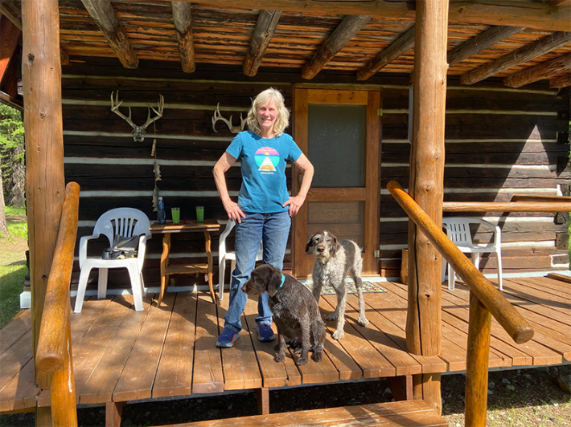
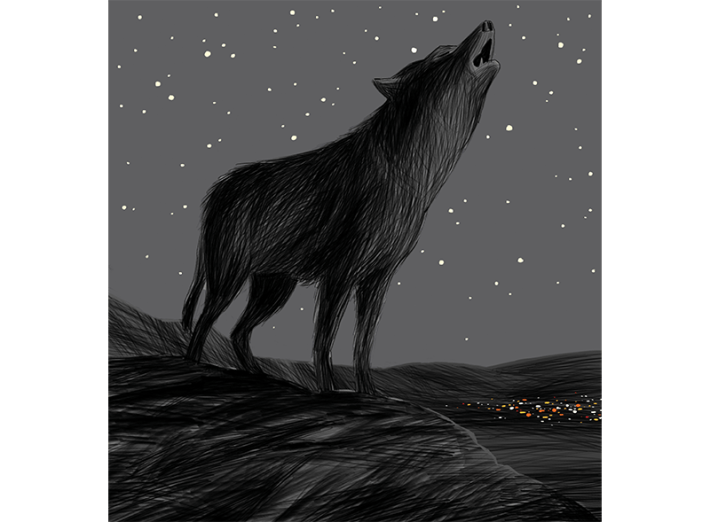
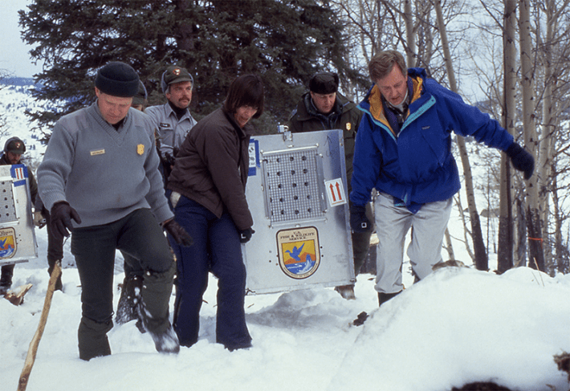
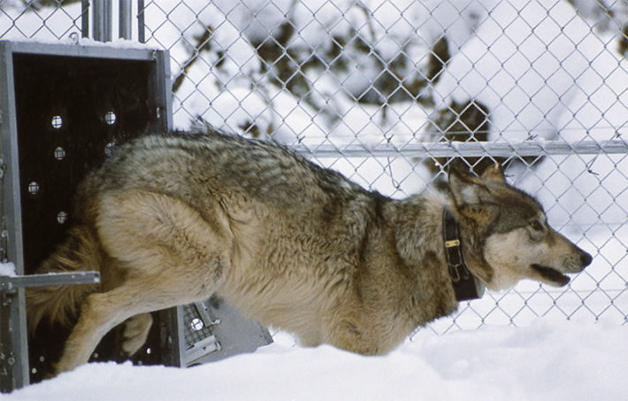
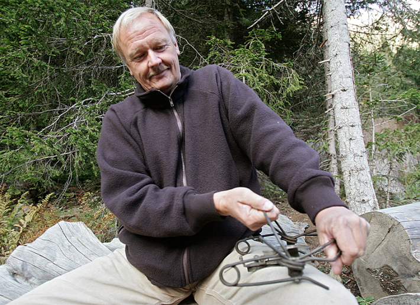
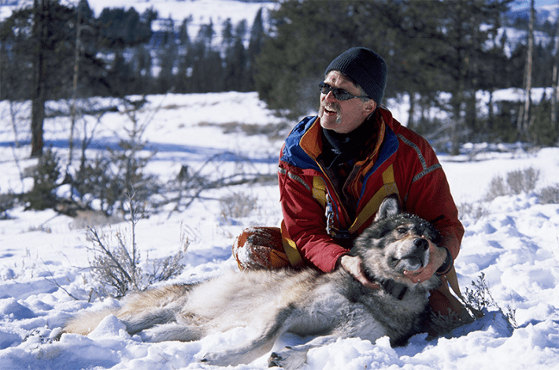

Diane Boyd walked along the North Fork of the Flathead River. It was a clear blue summer day, and the wolf biologist relished being in this Rocky Mountain valley in northwestern Montana. She set foot here 45 years ago to track the first known gray wolf to wander into the western continental United States from Canada in decades. Humans had exterminated the last of them in the 1930s.
The river wove through pine, aspen, and willow trees that rose along the edge of a sprawling grass meadow. The mountain peaks in the distance were topped with snow. Boyd grew up in suburban Minnesota, where she was the neighborhood kid who could be found at the wild edges of the subdivision putting caterpillars in jars.
“I always wanted to go more and more wild in my life—wildlife, wild places—and it doesn’t get a lot wilder than here,” Boyd said to me last summer, as we walked through the quiet meadow.
At age 69, dressed in jeans, running shoes, and a T-shirt picturing a dog lazing on a lake pier, Boyd seemed very much the innately independent biologist who settled here at age 24. She spoke with a directness that had little room for sentimentality. The meadow area is called Moose City and was originally a 1910s homesteader ranch with six log cabins. Boyd lived alone in one of the tiny cabins without electricity or running water for 12 years.
She was the rare woman among the congeries of male wildlife biologists, loggers, and hunters who traversed the valley in the 1980s and ’90s. She showed me the path where two loggers snuck up on her cabin one night, asking to come inside. “Step out where I can see you,” Boyd told them, staring down the barrel of her rifle she used to hunt deer and elk. The men turned and left.
Wolf reintroduction is a huge and messy paradox, a noble intention to save the wolf soaked in the wolf’s own blood.
Boyd gained a reputation as the elusive wolf biologist with a preternatural ability to find and trap wolves in the forest. Boyd used traps with smooth steel jaws that clamp around a wolf’s leg when they step on a spring-loaded disc buried in a spot where a wolf might step, like around a big rock in a deer trail. Shock and stress rifle through wolves’ bodies when the jaws snap on their leg. “It’s painful and terrifying for them,” Boyd said. “They’re top predators. They’ve never dealt with something they can’t fight or conquer. Trapping is never kind.” Boyd apologized to each wolf before tranquilizing and fitting her or him with a radio-transmitter collar.
Boyd tracked wolves in the heat, snow, on foot, skis, and a small plane with bush pilot Dave Hoerner. Her research revealed where wolves traveled and denned, what they ate, when they stayed with their packs or went solo, how they affected other animals, and how they died. She couldn’t be bothered with humans. (In 1993, a Sports Illustrated reporter spent 56 days trying to track Boyd down for an interview.)
She grinned when I mentioned her notoriety. “I was a complete misanthrope,” she said. “I didn’t have time to pussyfoot around socializing. I would rather just do my work. But I’ve mellowed and am much more social now.”
Last September Boyd published her first book, a memoir, A Woman Among Wolves. She captivatingly details her life in the wild, offering as close to a wolf’s-eye view of the Northern Rockies as we’re likely to see. Later in the book, as she takes stock of the state of wolves today, she delivers a stinging claim: “Wolf recovery is all about people and very little about wolves.”
In 1995, after an epic political battle between conservationists and conservative politicians, the U.S. Fish and Wildlife Service, the federal agency that manages America’s wildlife and wildlands, transplanted a total of 12 gray wolves from Canada into Idaho and Yellowstone National Park. At least twice that many had taken up residence in Montana on their own.
The gray wolf is the species of wolf most of us imagine a wolf to be, in reality and dreams, with its commanding body and thick rich coat, slender and strong legs, speeding across a meadow with its pack mates to take down an elk. It’s the biggest wolf species of all.
“They’re just incredibly clever and social animals,” Boyd said. “They feel things, they care, they’re playful.” Wolves form packs that are usually extended families—a breeding male and female, offspring, siblings. Sometimes they adopt. “They organize just like people,” Boyd said. “They hunt in packs because they’re not efficient as a single predator. They need to cooperate, communicate, and maintain a social order. They kill other wolves to protect their family and resources. They defend their territory to the death. It’s not an easy life. Wolves on average live a little over four years.”
Today, about 2,700 gray wolves range across Montana, Idaho, and Wyoming, raising new generations of pups and delighting observers, who in 2022 spent $82 million in the greater Yellowstone area of Wyoming, Montana, and Idaho just to watch wolves.

WOMAN AMONG WOLVES: Diane Boyd, with Sky and Benny, at her cabin in remote northwestern Montana in 2024. In the surrounding forest, Boyd tracked and studied wolves for more than 40 years. Photo by Kevin Berger.
As wolf reintroduction marks its 30th anniversary this year, Defenders of Wildlife, an environmental group instrumental in ushering it into law, calls it “one of most celebrated ecological experiments in history and an extraordinary conservation victory.” A veritable library of books and articles published in the past three decades tells a similar story.
Boyd, however, is telling a different one.
“I am absolutely certain wolves would be here in the numbers they are now just through natural dispersal,” Boyd said to me. “But natural recolonization was effectively killed by reintroducing the wolves.”
Once the government stepped in, Boyd said, the Westerners who hated wolves had a reason to hate them even more. That led to angry protests and dead wolves.
“Humans don’t like to have stuff foisted on them,” Boyd said. “It’s always perceived as a black-helicopter government—government forced on them, watching them. If wolves came on their own there would have been higher social tolerance of them. They would be better off now if they’d never been introduced.”
I actually met Boyd once before, in 1989. Plans to return wolves to the Rockies had been stirring in the environmental news. My brother Todd and I arrived here to string together the story, meeting ranchers and hunters who told us how much they hated the idea because wolves would devour cattle, sheep, and elk.
We lived in San Francisco and tried to be objective but apparently didn’t do such a great job of it. The head of the Montana Stock Growers Association said to us, “Well, boys, if you want wolves so much, why don’t you let them go in Golden Gate Park?”

Illustration by Jorge Colombo
We managed to coax Boyd into an interview one night with the help of her friendly colleague, Mike Fairchild. Their research was part of the Wolf Ecology Project at the University of Montana at Missoula, where Boyd had received her master’s degree in wildlife biology and later her Ph.D.
Boyd informed us that hunters and ranchers drummed up opposition to the wolves by exaggerating their numbers and the number of pups they could bear. Boyd’s accurate counts and insights into wolf biology were golden to early reintroduction advocates.
Back then, I had assumed Boyd was on the side of wolf reintroduction. So, I was surprised to learn many years later that she had never supported it. As a nature lover from a big city—Boyd calls us “greenies”—I had taken it for granted that wolf reintroduction was a progressive act, restitution for Americans having slaughtered a million and more wolves in the 1800s and 1900s. Without the wolf, a predator key to natural ecological relationships, the American wilderness was diminished.
After many conversations with Boyd, key architects of wolf reintroduction, wolf scientists, animal trappers, ranchers, animal welfare experts, and environmental lawyers, I have to say my view now is not so green. I learned how wolves suffered and died in the course of reintroducing them.
Built on the foundations of conservation and science, shaped by industry and politics, wolf reintroduction is a huge and messy paradox, a noble intention to save the wolf soaked in the wolf’s own blood. For the 2,700 wolves that roam the Northern Rockies today, data shows at least five times as many have been killed in the past three decades. From 2021 to 2023 alone, hunters and state wildlife managers legally killed more than 1,500 wolves in Idaho, Montana, and Wyoming.
Was Boyd right? Would the wolves be better off now without introduction?
The first wolf that wandered alone into Montana 46 years ago was doing what her kin had done for millenia, branching out from her family to find a mate and territory to call her own. She didn’t know there was a border between Canada and the United States. The forest that ranged across both countries was the same place to her.
She was, after all, a wolf.
For years, the wolf traveled hundreds of miles on her own. She investigated “beaver lodges, deer sites, coyote urinations, river bottoms, and mountain ridgelines,” Boyd wrote in her memoir. After three years of roaming alone, the intrepid wanderer found a mate. The pair’s sleeping sites in the forest showed they curled up together, and in the spring of 1982, they had seven pups.
In the following hot summer, the male was accidentally snared in a trap set by grizzly bear researchers. He died the next day, likely from the heat and stress of the capture, Boyd believed. The “plucky and lucky” single mom provided for her pups alone. They survived the humans populating the land around them and had litters themselves in the Northern Rockies.
The growing families settled in forest areas like river drainages where they found plenty of elk, deer, moose, and bighorn sheep to feed on. And sometimes, but rarely, when wolves were on the hunt, they came across a ranch and took down a steer calf or lamb.
Some long-distance sojourners walked from northwestern Montana to Idaho to establish new packs. One female traveled more than 500 miles from Montana to a new territory in British Columbia. Had she traveled south instead of north, Boyd wrote, she would have settled about 100 miles south of Yellowstone. She could have been hugging the border of Colorado.
In 1985, a female wolf with a creamy white coat was traversing the mountains surrounding the Moose Creek meadow, searching for a mate. She found him and by May that year had built a den just north of Montana’s Glacier National Park, where the white wolf nursed and played with her seven new black pups. She had five more pups the next year, this time inside the park.
“Wolf recovery is all about people and very little about wolves.”
The white wolf was canny and intelligent. Boyd used her best tricks to try and capture her. She wanted to replace her radio collar before its signal failed. But the “white phantom” kept outwitting her. The white wolf would paw the dirt around Boyd’s traps, expose the buried piece of metal, and pull the trap to the ground, sometimes without springing it. She would defecate to the side of the trap, “proclaiming this turf as hers,” Boyd wrote.
Family dynamics in a wolf pack never stand still. In 1987, the white wolf was deposed as the breeding female from her pack. Her allure, though, hadn’t faded, and in just months she found a new mate and gave birth to her third litter of pups. Something roiled her previous pack, and some of the members rejoined the white wolf to help raise her new family.
In September that year, five of the white wolf’s pups ran afoul of Canadian hunters and poachers, who shot and killed them. The remaining wolves who had lived with the white wolf fled south to their old pack in the sanctuary of Glacier National Park, “seemingly understanding the danger of the British Columbia wolf hunting season,” Boyd wrote.
The white wolf, solitary again, wandered for years through the Northern Rockies. She was 9 years old in 1992, elderly for a wolf, and lingered in the foothills near a forestry camp in Alberta, Canada, where an outfitter shot and killed her.
Before she died, the white wolf trotted across the Moose City meadow toward Boyd’s cabin. She locked eyes with Boyd and then turned around and trotted back in the direction she had come from, disappearing into the willows. Boyd wondered why the white wolf had come. Did she recognize her scent from her traps? Boyd decided the white wolf had “dropped by to let me know that she was still out there, still in control, and still smarter than me.”
While wolves were doing wolf things in the Northern Rockies, humans had big ideas for them.
For wildlife conservationists, bringing back the wolves would restitch the ecological tapestry of animal and plant species in the areas from which the wolves had been excised, especially the iconic Yellowstone, the nation’s first national park.
The vision of the wolf’s ecological role was inherited from naturalist and writer Aldo Leopold. In his posthumous 1949 book A Sand County Almanac, Leopold told a wistful tale of his awakening to the wolf as an embodiment of interwoven nature.
Leopold was a hunter. One day he and his companions shot a wolf, as they had done many times before. “We reached the old wolf in time to watch a fierce green fire dying in her eyes,” Leopold wrote. “I realized then, and have known ever since, that there was something new to me in those eyes—something known only to her and to the mountain.”
Leopold, educated in forestry, wrote that without a predator like the wolf to take down elk and deer (both are a prime wolf meal), the ungulates would overgraze and impoverish “the flora, from wildflowers to forest trees,” in their habitats. This was visibly true in Yellowstone in the 1940s, where “the elk are ruining the flora.”
Meanwhile, conservative politicians had their own vision. The restoration of wolves would be a major affront to their constituent developers, ranchers, and hunters.
In 1985, Wyoming Representative Dick Cheney read an interview in the Casper Star-Tribune with National Park Director William Penn Mott. Mott said wolf reintroduction would “add a great deal to the natural values of Yellowstone and balance the ecosystem.” Cheney immediately wrote to Donald Hodel, the secretary of the interior, Mott’s boss: “I just want you to know that I am every bit as committed to preventing government introduction of wolves as Bill Mott is determined to put them there.”

THE DEBUT: Bruce Babbitt (far right), Secretary of Interior in 1995, helps carry the first wolf for reintroduction into Yellowstone. Babbitt’s endorsement of reintroduction, after years of political battles over it, was critical. Photo by Jim Peaco / National Park Service.
Republican Representative Ron Marlenee of Montana opted for the rhetorical dig. “Will the wolf be just another ploy by ‘green bigots’ to block development in Montana?”
Those anecdotes come from the book Wolf Wars by Hank Fischer, the definitive insider account of the political machinations behind introduction. Fischer was the Northern Rockies representative of Defenders of Wildlife. He worked unflaggingly on behalf of reintroduction for 15 years, including facing off with the conservative politicians in their Capitol Hill offices. Early in the battles he instituted a key strategy, the Wolf Compensation Fund, a pool of money from donors to reimburse landowners for livestock killed by wolves.
For Fischer, like the Yellowstone managers who set wolf reintroduction in motion in the 1970s, ecological restoration was the Holy Grail. Fischer explained in Wolf Wars that he was inspired less by the wolves themselves than by a vision of Yellowstone where you could experience “the intricate interplay of wolves; elk; aspen; beetles; ravens; fire; weather; and people, the aspect of the equation all too often overlooked.”
Like all wars, victory was going to depend on compromise. In this case the compromise involved the Endangered Species Act.
The act was passed by Congress with nary an objection and signed into law by President Nixon in 1973. The politically savvy Nixon was no environmentalist, but his statement when he signed the Endangered Species Act underlined its central goal: the preservation of “the rich array of animal life with which our country has been blessed.”
The Endangered Species Act was riding a wave of environmental good will on both sides of the political aisle that practically seems naïve today. It followed the Clean Air Act, Clean Water Act, and the National Environmental Policy Act into law. The lawyers and scientists who wrote the Endangered Species Act, and the lawmakers who sold it on Capitol Hill, saw it as recompense for animals rendered extinct by “economic growth and development untempered by adequate concern and conservation.”
The gray wolf, victim of inadequate concern for conservation throughout America’s history, was added to the Endangered Species List in 1974.
Environmental law scholar David Takacs, an emeritus professor of law at the University of California, College of the Law, San Francisco, told me he considered the Endangered Species Act “the most radical statute ever passed by the U.S. Congress of any kind. It said the value of non-human species is incalculable, and the needs of those species take precedence over the needs of humans in the United States.”
The Endangered Species Act sought to save a species by also protecting its critical habitat. Development plans that jeopardized critical habitat were subject to review by the Department of the Interior. That was where the radical law met its match.
The ink on the Endangered Species Act was barely dry when the critical habitat distinction made headlines. A tiny, endangered snail darter fish was in danger of losing its habitat if a dam in Tennessee was built. The law held up construction for two volatile years.
Never mind that Congress managed to get the snail darter exempted from the Endangered Species List, the dam was built in 1979, and decades later a scientist determined the snail darter wasn’t, technically, even a snail darter. The dam brouhaha generated bad vibes for the critical habitation distinction and dissolved much of the bipartisan good will for the Endangered Species Act.
In 1982, Republicans in Congress sealed an amendment into the Endangered Species Act that defanged critical habitat protection. Endangered species could now be classified as “nonessential experimental populations.” “Nonessential” meant the reintroduced population wasn’t critical to its overall survival in the U.S. Indeed, there were sustainable populations of gray wolves in Alaska and Minnesota. “Experimental population” meant that recovery of an endangered species would be confined to a specific management zone.
The “plucky and lucky” single mom provided for her pups alone.
The new amendment, known as “10(j)” for its section listing in the Endangered Species Act, undercut the federal power of the Act by inviting state wildlife agencies, with their own agendas, into the room to shape wildlife management plans. It also overruled the section of the Endangered Species Act that prevented citizens from “taking”—that is, killing—an endangered species. Landowners whose livelihoods were threatened by an endangered species could now be permitted to kill the animal themselves.
Takacs, coauthor (with Jesse Honig) of a journal article, “Wolf Law,” which pored over all the legal actions behind wolf reintroduction in the Northern Rockies, said it was likely the 10(j) amendment was added with wolves in mind. A Senate report on the amendment mentioned wolves as an example of an experimental population that could be killed if “depredations occur or if the release of these populations will continue to be frustrated by public opposition.”
The 10(j) amendment was inserted into the wolf recovery plan by the architects of the plan themselves. They constituted a 10-member team under the aegis of the U.S. Fish and Wildlife Service that included wildlife experts from the National Park Service, Idaho Department of Fish and Game, and the National Audubon Society. Bob Ream, founder of the Wolf Ecology Project, was also on the team. Ream was opposed to reintroduction and favored allowing the wolves to return on their own, as his mentee, Boyd, would favor after him. Ream was outvoted.
The decision by the recovery team to include the 10(j) amendment flipped the Endangered Species Act on its head, Takacs said. “The Endangered Species Act is supposed to be about managing people for the benefit of endangered species. But the recovery plan showed the Fish and Wildlife Service was about managing wolves for the benefit and convenience of people.”
This was Boyd’s point. The welfare of the wolves would have been better served if they were allowed to return on their own, shielded by the unexpurgated Endangered Species Act. With the 10(j) amendment, Boyd said, “Wolves could now be shot for killing livestock. If the wolves walked in on their own, nobody could have touched them.”
Sarcasm was creeping into Ed Bangs’ voice. “ ‘Oh, if the wolves had just come on their own, people would have been so accepting, and there wouldn’t be all this controversy.’ That’s a fairy tale.”
The gregarious Bangs, with a deadly dry sense of humor, greatly admires Boyd. When he arrived in Montana in 1988 to take charge of wolf recovery for the U.S. Fish and Wildlife Service, he said, “I realized the only people who knew anything about wolves were Diane and Bob [Ream] and Mike Fairchild of the Wolf Ecology Project.”
Boyd worked briefly for Bangs in the late ’90s, monitoring wolves and working with ranchers to resolve conflicts with wolves without killing them, such as installing fences with flapping flags and noisemaking devices that deter the wolves. They have also been coauthors on academic papers. Bangs just didn’t buy Boyd’s view that wolves would have survived on their own.
Bangs oversaw reintroduction in the Northern Rockies for 23 years. In the late ’80s he led more than 500 community meetings, mostly in rabid anti-wolf counties, the voice of pragmatism in a din of anger. No, wolves don’t attack people; no, wolves that came down from Canada aren’t mutant giants; no, wolves won’t wipe out the elk and deer for hunters; and yes, wolves can be managed to protect ranchers’ livestock (with some killing).
During the meetings, Bangs told me from his home in Helena, Montana, “I can’t tell you how many people walked up to me and bragged, ‘My granddad killed the last wolf in this county. And Granddad was carried through the streets on a chair, he was a hero.’ That’s the culture here. It’s never gone away. So, are you going to tell these people they can’t do anything when a wolf comes into their backyard? Those wolves are dead. People only obey laws they think are fair. You are going to have lethal control of wolves whether it’s legal or not.”
What’s more, the reintroduction train was out of the station. There was no turning back. The train was also now fueled by plenty of other people who were excited about the opportunity to see wolves in the wild, or just knew they were out there, reviving nature. The amendment that defanged the Endangered Species Act provided final passage.
“You have to understand, these guys could have stopped this thing any time,” Bangs said, referring to the anti-wolf congressmen in Wyoming, Montana, and Idaho. “If the environmentalists had argued in court, ‘We should reintroduce wolves as fully endangered, with no control for depredating wolves,’ reintroduction would have never happened. Those guys would have killed that in a heartbeat.”
Begrudgingly, the conservative congressmen backed off. Wolves would be reintroduced as experimental populations in three management zones: northwest Montana, central Idaho, and greater Yellowstone, which included the park and contiguous areas of Idaho and Montana. In 1994, the Department of the Interior signed off on the recovery plan; a final battle against wolf opponents in a Wyoming district court was won.
The stage was set for bringing wolves back to the Northern Rockies.
Enter Carter Niemeyer. Wildlife Services is a federal agency that may not be well known outside rural America. It’s the agency that fields calls from landowners who report a wild animal—wolf, bear, coyote, mountain lion, fox—has killed their livestock (or dogs). An agent is then dispatched to capture, relocate, or even kill the animal.
The federal government has granted the agency the power to kill wild animals since it was founded in 1885. During America’s Westward Ho days, the agency itself helped wipe out the wolves. Since then, it’s killed millions of wild animals across the country. In the past 30 years, it’s killed hundreds of wolves.
At the dawn of wolf reintroduction, Niemeyer was the western Montana district supervisor of Wildlife Services, then called, less euphemistically, Animal Damage Control. He had trapped and killed thousands of coyotes, foxes, elk, moose, and practically every other animal that moved in the wild. He hadn’t killed a wolf yet. He would kill 13 before his career was over.
Niemeyer, however, was known as the most scrupulous trapper in the business. He didn’t just take ranchers’ word that a wolf or bear killed their livestock and sign off on a permit so the rancher could be reimbursed. He knew how to identify the signs of each predator’s means of killing or whether livestock had accidentally killed themselves from tangling with a fence or died from disease or infection. Niemeyer made the final calls for the Defenders of Wildlife’s reimbursement program.
Niemeyer and Bangs quickly bonded in the wolf recovery drama. The folksy Niemeyer also has an ingratiating sense of humor, evident in his 2010 memoir, Wolfer. It could have been called Confessions of an Animal Killer for its disarming candor and wistful tone of penitence. However, I must say, as a greenie, even a reformed one, Niemeyer’s—and Bangs’—matter-of-fact manner of describing killing wild animals can be a little alarming.

HOLDING PEN: A wolf sprints from its shipping container into a holding pen in Yellowstone. Wolves were caged in the pens for several weeks to acclimate to the scents of their new habitat in the park. Photo by Jim Peaco / National Park Service.
As wolves began finding new homes in the Northern Rockies, the unflappable Niemeyer brought calm to landowners who demanded that he come out to their ranches, and track down and kill the wolves devouring their cattle and sheep. Most of the alarms were set off by hot air. During the first few months of 1994, Niemeyer did necropsies on more than 100 sheep, cattle, and horses that landowners claimed had been killed by wolves. Niemeyer found that only five of the animals—four calves and a lamb—were wolf victims. (A report by the Humane Society of the U.S. found that wolves, based on data from 2015, killed 0.04 percent of cattle and sheep in the Northern Rockies.)
Niemeyer’s and Bangs’ first real challenge together came in 1989, when the duo arrived at a northern Montana ranch where the landowner insisted that a pack of wolves had killed four of his calves. “No, sir,” Niemeyer said, after examining them. This time the rancher wouldn’t buy Niemeyer’s evaluation, and didn’t keep his anger to himself. “The local newspapers had convicted the wolves, and so had the neighbors for miles around,” Niemeyer wrote.
Bangs held firm and didn’t order the wolves to be trapped or killed. Not long afterward, the pack did attack a few livestock. This time Bangs and Niemeyer trapped them—two adults and two pups—and shipped them to the sanctuary of Glacier National Park. It was September, and Bangs miscalculated that the pups could find food—small game and carrion—that late in the year. “Both pups starved to death,” Bangs said.
Bangs trapped the adult male to move him. His colleagues (not Niemeyer) bandaged the wolf’s damaged foot and released him with the bandage on. “That was a rookie mistake, but a horrible mistake,” Bangs said. “I saw that his leg was infected and so the main thing to do was euthanize him. So I shot him with the rifle I borrowed from the rancher who was with me. I was sad. You know, we screwed up. We messed up. I mean, we’re not perfect. We made mistakes.”
When wolf reintroduction finally got the green light in 1994, Niemeyer was the person for the job to bring the wolves down from Canada.
Bangs first sent an assistant to coordinate the U.S. Fish and Wildlife Service plans with Canadian trappers. The Service had already signed a contract with a local Canadian to trap wolves for $2,000 each—and not kill them. But when Niemeyer got to Alberta in November, he found the assistant had done little to keep in contact with the trappers, and his office in a motel was a mess.
“I was alarmed at the lack of preparation for this historic moment in conservation,” Niemeyer wrote in Wolfer. As “far as I could tell, the Fish and Wildlife Service had put almost no thought into how we’d actually obtain the wolves.”
Niemeyer drove to the dense forest cabin of the hired Canadian trapper himself. The trapper and two of his buddies were angry because they hadn’t heard from the Fish and Wildlife Service in weeks. They had already captured nine wolves. When they didn’t hear from the U.S., they killed all nine, skinned them, and sold their hides for about $400 each.
The head trapper didn’t believe Niemeyer was there to finally pay them. “Why should I believe another government biologist in a government truck with government plates,” he told Niemeyer at the time. The trappers wanted Niemeyer to prove himself. They brought in two big dead black wolves from their pickup truck and challenged Niemeyer to a race to see who could skin a wolf the fastest.
The contest was held in the head trapper’s dining room, and Niemeyer held the dead and bloody wolf in his lap. It had been shot in the head, presumably to end its struggle in the trap. Niemeyer and one of the trappers pulled out their knives and began their macabre contest. The head trapper’s wife brought them glasses of wine. After a couple of hours, with his clothes soaked in the wolf’s blood and feces, Niemeyer finished first. He and one of the trappers carried the fur-less carcass to the back door and tossed it on the icy deck. To the trappers, Niemeyer could now be trusted. “He’s one of us,” the head trapper said to his buddies, as Niemeyer recounted in Wolfer.
The next day, the Canadians trapped three wolves. They weren’t using leg traps but neck snares made of a thin, strong cable attached to tree trunks that lassoed the wolves around the neck and stretched tight as they tried to escape. The U.S. Fish and Wildlife Service contract stipulated that the neck traps have metal stops on the cables that snare tight enough to hold the wolf by the neck but not strangle it to death.
“We messed up. I mean, we’re not perfect. We made mistakes.”
One trapped wolf was an adult female silver wolf whose weight was on the slight side. The cable was so tight around her neck that Niemeyer had to snip it off with cable cutters. She was limp and freezing and the corners of her mouth were deeply cut from biting the long stem of her noose. The other two traps held her pups. Niemeyer freed one of them. The snare had tightened around her shoulder and not her neck, saving her from being strangled. Her leg was badly cut. The other pup was dead and frozen in the brush. The next day, with mother and her lone pup in holding pens, Niemeyer called a vet to suture the cuts on their lips and legs.
Over the next year, Niemeyer said, the operation ran better. But not for the wolves. They were still being traumatized when captured in traps and put in holding pens. The wolves often cracked and broke their teeth on the bars in pens, trying to escape. Neimeyer and his colleagues also shot wolves with tranquilizer darts from planes as the wolves ran through the forest. Sixty-six wolves in total were captured and then released in Yellowstone and Idaho in 1995 and 1996.
One day in 1996, Niemeyer stood by the pen of a particularly aggressive wolf. The wolf made long eye contact with him. “The message was clear: He was fed up with people bothering him,” Niemeyer wrote.
The wolf was flown to Missoula, Montana, where biologists examined his health and penned him, before he would be trucked to Idaho for release. One of the wildlife biologists slipped ice under the pen’s sliding door for the wolf to lick and the wolf lunged and bit the biologist’s finger. As government policy required for any wolf who bit a person, the wolf was killed and tested for rabies. It was negative.
Last September, talking with Niemeyer, I remarked that reintroducing the wolves back to the Northern Rockies literally began in a pool of wolf blood in that trapper’s dining room. “Bingo,” he said. “It’s symbolic, and an irony I’ve had to live with. It was an ugly side of the business that needed to be done. I’m just saying, from my 33 years in the field, if you don’t have the stomach for dead wolves, reintroduction ain’t for you.”
Doug Smith sighed. Smith was the project leader of wolf reintroduction and wolf management in Yellowstone for 28 years. He retired in 2022. With his bushy walrus mustache, he is the quintessential field scientist, a genial and sympathetic guide to the wolves in Yellowstone, whose unique personalities he got to know over his many years in the park.
He wasn’t agitated about Niemeyer’s bloody account. In “How Wolves Returned to Yellowstone,” published in a 2020 book of scholarly essays, Yellowstone Wolves, co-edited by Smith, he and his coauthors recommend Niemeyer’s book Wolfer “for a personal account of the challenges” of retrieving the first wolves from Canada.
Rather, it was Boyd’s conviction that wolves would have repopulated Yellowstone on their own that had Smith “animated,” he said.
Like Bangs, Smith wanted to impress on me that he admired Boyd, and they were friends. And he agreed that wolves did travel hundreds, even thousands of miles through the Northern Rockies, and did reach Yellowstone from northern Montana. But the individual wolves were shot, he said, before they could form new packs.
Smith was all for the idea of natural recolonization. It has been successful in other states. While humans in the 1900s were finishing off wolves in the Western U.S., some wolf packs survived in northern Minnesota. Wolves likely from Minnesota returned on their own to Wisconsin in the ’70s and Michigan in the ’80s. Both states host wolf populations today. In those three states, Smith said, “it’s continuous forest. Wolves aren’t as visible in forests. They have places to hide. There are corridors connecting Minnesota to the Upper Peninsula Michigan and northern Wisconsin. So natural recovery was the best decision there.”

THERE WILL BE BLOOD: Carter Niemeyer, with an animal trap, was sent to Canada to build relationships with local wolf trappers who would capture the wolves for reintroduction. It was a bloody affair. Photo by AP Photo / Lionel Cironneau.
But not a good decision for Yellowstone. The GYE (Greater Yellowstone Ecosystem), comprising the park in Wyoming and contiguous lands in Montana and Idaho, “is an ecological island surrounded by a sea of humanity,” Smith said. “When you hit the edge of the island, you go into roads, private land, and open country, and wolves get shot in open country. It’s a human-dominated landscape with guns and cars everywhere—a gauntlet the wolves have to get through.” And they haven’t got through it, Smith said. From 1995 to 2024, “we have not documented wolves making it to the GYE from where Diane says they would have come from.”
Boyd had said the 10(j) amendment to the Endangered Species Act, which permitted landowners to shoot wolves themselves, was ultimately detrimental to their recovery. Smith disagreed. He claimed the amendment “made reintroduction more palatable and acceptable to the public.”
“Diane is right,” said Adrian Treves, a professor of environmental studies at the University of Wisconsin-Madison, where he founded the Carnivore Coexistence Lab. Treves explained to me that the 10(j) amendment is a forerunner of current laws that grant state wildlife agencies the right to cull wolves and the public the right to hunt them. Legalized wolf killing, Treves said, has not made the public more tolerant of wolves—namely the part of the public likely to do the killing, landowners and hunters.
“With legalized killing, the government has sent a signal to would-be poachers that wolves have little value,” Treves told me. What’s more, “People feel like, ‘OK, it’s more acceptable now to kill wolves because the government’s doing it. And if they don’t do it, I’m going to help them out.’ ”
In 2001 and 2004, Treves and colleagues mailed a total of 1,900 surveys to Wisconsin residents who lived in wolf country, the north part of the state. Then they recontacted 650 of those residents in 2009. During that time, wildlife agencies implemented a program to cull wolves who had been attacking livestock (and dogs). By 2009, Treves’ survey participants showed an increase in their fear of wolves, support for culling them, and inclination to poach them, that is, illegally kill them without a government permit.
Treves and colleagues drilled deeper into poaching in a data analysis of wolf information in Wisconsin and Michigan. From 1995 to 2012, both states went through periods when wolves were alternately protected and culled. During the periods when state wildlife managers killed wolves because they were preying on livestock, Treves and his colleague Guillaume Chapron, an ecologist at the Swedish University of Agricultural Sciences, calculated that the normal population growth rate of wolves had slowed down. Treves and Chapron examined data that could provide alternative biological explanations for the decline, such as a decline in wolf pack sizes, or wolves leaving the state, but that turned up empty. That left illegal killing as the best explanation. The study, Treves and Chapron pointed out, is focused not on wolf habitat in the wilderness but in a “human-dominated matrix.”
It’s the irony at the heart of reintroduction that it has given trappers and hunters so many wolves to kill because it was so successful. In the beginning, that success was due to “gold star, rock-solid science,” Bangs said. Wolves were captured in different areas in Canada because that would ensure that when the wolves hooked up in America, they would establish genetic diversity, key to their health and longevity. Genetic studies have shown that inbreeding among wolves (and many other animals) in an insular area sets up a high probability for the population’s extinction.
As the reintroduction plan spelled out, wolves would be considered recovered when 100 wolves inhabited each of the three recovery areas—Montana, Idaho, and Wyoming—for at least three years. The wolves met that goal in practically no time. By 2002, they had more than doubled the recovery goal, and 663 wolves traversed the Northern Rockies.
In 2011, wolves in Montana and Idaho, whose populations had grown past recovery requirements, were “delisted,” removed from the Endangered Species List. In Wyoming, court battles between wildlife agencies and conservationists broke out, and wolves were listed and delisted several times. Agencies got the upper hand in 2017, when wolves were delisted and public “harvesting” of them could resume. (Hunting has always been banned inside Yellowstone.)
The initial recovery plan gave states a place at the federal table to manage the wolves. Delisting moved them to the head of the table. Today, state wildlife departments declare they manage wolves “for a stable, self-sustaining population in suitable habitat for conservation purposes and harvest opportunity,” reads the current Idaho plan.
“Let’s just let nature take its course. Let wolves be wolves.”
The number of wolves in Idaho, Montana, and Wyoming do exceed the federal targets that consider them recovered. But culling up to 50 percent of the wolves, as the states do, through hunting, trapping, and “harvesting” because of supposed livestock attacks, stems not from science from politics, say Boyd, environmentalists, independent conservationists, and reintroduction’s architects.
Attorney Amaroq Weiss, senior wolf advocate for the environmental groupCenter for Biological Diversity, told me, "No other species that has come off the federal Endangered Species List has immediately been met by the enactment of hunting and trapping seasons. That just doesn't happen. It's clear these wolf hunting laws and regulations are politically based."
Cattle and hunter politics run the show, Bangs said. “There were and are professional scientists of the highest caliber in the state agencies in Montana, Idaho, and Wyoming. But politics is so polarized and bitter now. State game managers can’t make scientifically valid judgments because they’re overridden by some guy who likes to hunt.”
State game departments bank on wolf hunting licenses. From 2009 to 2023, wolf licenses generated $5.4 million for Montana Fish, Wildlife, and Parks, about 10 percent of its total hunting license revenue. Montana’s current governor, Greg Gianforte, a hunter, legally trapped and then shot a radio-collared wolf leaving Yellowstone in 2021. He was given a warning by his own wildlife department for not having taken a required trapping course.
In 2021, Gianforte signed a bill with newly relaxed rules for wolf hunting in Montana. Hunters can now trap wolves with neck snares, use bait to lure them, hunt them at night with artificial lights, kill them with crossbows or handguns. Hunters can trap and kill up to 20 wolves each. License sales have no limit. From 2021 to 2023, according to Montana Fish, Wildlife, and Parks, licensed hunters killed more than 750 wolves in the state. Meanwhile, in Idaho in 2021, a bill passed that ruled hunters could use ATVs to run down wolves and use dogs to chase them into spots where they were easier to shoot. In 2021 and 2022, according to the Idaho Department of Fish and Game, Idaho wolf hunters and trappers killed more than 800 wolves.

COUNTERPOINT: Doug Smith, former leader of wolf reintroduction in Yellowstone, praised his friend Diane Boyd for her pioneering research. But he refuted her view that wolves could have recovered on their own. Photo courtesy of U.S. Fish and Wildlife Service.
Amid the carnage, there are small steps being taken by some ranchers to deal with wolves in nonlethal ways. Montana rancher Denny Iverson told me that he was never in favor of wolf reintroduction. He agreed with Boyd that the government's hand in restoring the wolves riled his fellow ranchers and natural recovery under the Endangered Species Act “would have been more accepted. The fact that they’ve come on their own and they are protected gives you a little pause before you start flinging lead.”
Iverson’s family has run a relatively small ranch of 130 cattle in western Montana for generations. For a period of six years in the 2010s, Iverson said, while his cattle were grazing in open pasture, he lost one or two calves a year to wolves and grizzly bears, about 10 in total. He is also on the board of directors of Blackfoot Challenge, a nonprofit organization that brings the community together in the 1.5 million-acre Blackfoot wilderness region to resolve problems including river pollution, overzealous logging, development, and recreation—and livestock predation by bears and wolves.
Blackfoot Challenge’s programs aim to protect ranchers from hungry wolves by funding “range riders” who patrol ranchers’ grazing pastures for wolves and remove dead animal carcasses that might attract wolves. A newer technology includes fitting cattle with GPS-enabled collars that track and give them a mild shock if they venture outside their open pasture grazing areas. Iverson credits the programs for keeping his cattle safe from wolves and bears for the past six years. But politics was working against the nonlethal programs. “To expand and implement the programs, you need the backing of your politicians to fund them, and that’s taken longer than we hoped,” Iverson said.
Iverson admitted his ranch was small compared to his neighbors, some of whom have up to 1,400 cattle. And, yes, he said, some of his neighbors maintained the unswayable attitude toward wolves of “Shoot, Shovel, and Shut Up.”
But at the same time, Iverson told me that more ranchers than ever in his community were experimenting with the nonlethal methods of keeping wolves from their cattle. I know Iverson was eager to talk to me because he wanted to promote Blackfoot Challenge. But I welcomed his voice. It was refreshing to hear from a rancher in a community trying to live alongside wolves without shooting them.
Aiming for a bottom line on how wolves should ideally be managed, I asked Bob Crabtree, founder and chief scientist of the independent organization Yellowstone Ecological Research Center, who has studied wolves in the Northern Rockies for more than 30 years, for his view. He didn’t hesitate to offer it. “By leaving them alone.” Ultimately, wolves manage themselves. “That’s how they evolved,” Crabtree said. “They don’t like their territories to overlap with other packs. If they do overlap, wolves kill each other. If they don’t overlap, they don’t kill each other. They naturally control their own numbers. So, let’s just let nature take its course. Let wolves be wolves.”

Letting wolves be wolves was Boyd’s view of how they should be managed from the days and nights she tracked the lone wolf in Montana 46 years ago. She hasn’t changed her mind. I regaled her with all the criticism of natural recovery that I had collected from talking to others. She wasn’t fazed. Wolves navigate gauntlets of people with their own wiles every day, Boyd said. They didn’t need to be reintroduced.
“I give the wolves more credit for their resilience and intelligence. I have seen them go to amazing places and survive. We’ve documented them going everywhere, and we only document a fraction of the actual dispersals. Wolves originally from Montana have recolonized Oregon, Washington, and California.”
The wolves didn’t need to be rushed back to the Northern Rockies on the enthusiasm of their human advocates. At the slower pace of natural recovery, Boyd said, “the wolves could have had time to adapt and adjust to being more around people. Some of that adjusting means wolves who are too bold will die. Some individuals who have an innate tendency toward mixing with livestock aren’t going to make it. But other individuals can learn from ones who were shot and stay away from livestock. I just don’t get it. It’s not, ‘Would they have made it?’ They were already making it.”
Listening to Boyd, given her life among wolves, I could see a crack of light coming through the wall of arguments for reintroduction. I could picture naturally recovered wolves in the U.S. going about their daily lives.
And in a way, the wolves that first walked into Montana do live on today. Descendants of the wolves who arrived in Montana on their own and of reintroduced wolves have been breeding for generations. They have merged into one big metapopulation of wolves across Wyoming, Montana, and Idaho. Nevertheless, said Bridgett vonHoldt of Princeton University, an expert in evolutionary genomics, who has studied wolves in the Northern Rockies for more than 15 years, genetics can still connect individual wolves today to the “two original stocks” of wolves from northwestern Montana and those reintroduced.
But the paradox remained. Wolves are being killed in record numbers. Yet they are now flourishing in areas from which they had been wiped out less than a century ago.
When reintroduction began, said environmental lawyer Takacs, “It was very clear that the Fish and Wildlife Service was going to manage wolves for the convenience of people. That has certainly led to an awful lot of slaughter and political agony and controversy. But at the same time, there are now a couple of thousand gray wolves in the West, and that’s amazing.”
Still, I’m torn. Would wolves, as Boyd said, be better off without reintroduction?
After my very first meeting with Boyd, my brother and I hiked into the Canadian Rockies in Alberta with a wildlife biologist, Dave Huggard. We heard the beeps on Huggard’s receiver of a radio-collared female wolf. She was forming a wide circle around us, Huggard said, as she was returning to her den of pups on a hillside, which Huggard had previously spotted.
The female began to howl and was soon answered by the howling of her pups. We stood transfixed in a symphony of howling wolves. Silence returned and we saw the female wolf standing on the embankment of the stream a few hundred yards from us. She stared at us, and we stared at her. In about five seconds, she walked up the scrubby hill to her den, out of our sight.
Our wolf encounter was before U.S. reintroduction began. Maybe the female wolf and her family would migrate into Montana on their own. Or maybe one of her pup’s offspring would be trapped, traumatized, penned, and shipped to America. I hope it wasn’t that. So perhaps I do have my answer. 
See also: “Wolves Reintroduced Themselves to America.”
Lead photo by Holly Kuchera / Shutterstock